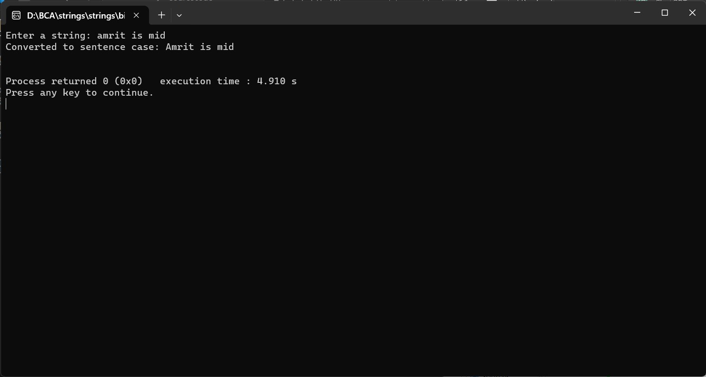

ENTER THE STRING FROM USER AND CONVERT INTO SENTENCE CASE
#include
#include
void toSentenceCase(char *str) {
// Assume the first character is at the beginning of a sentence.
int capitalize = 1;
while (*str) {
// If it's a letter and needs to be capitalized.
if (capitalize && isalpha(*str)) {
*str = toupper(*str);
capitalize = 0;
} else {
// If it's a period, question mark, or exclamation mark, set the next character to be capitalized.
if (*str == '.' || *str == '!' || *str == '?') {
capitalize = 1;
} else {
// If it's not a space or punctuation, set to lowercase.
*str = tolower(*str);
}
}
str++;
}
}
int main() {
char input[1000];
printf("Enter a string: ");
fgets(input, sizeof(input), stdin);
toSentenceCase(input);
printf("Converted to sentence case: %s\n", input);
return 0;
}
